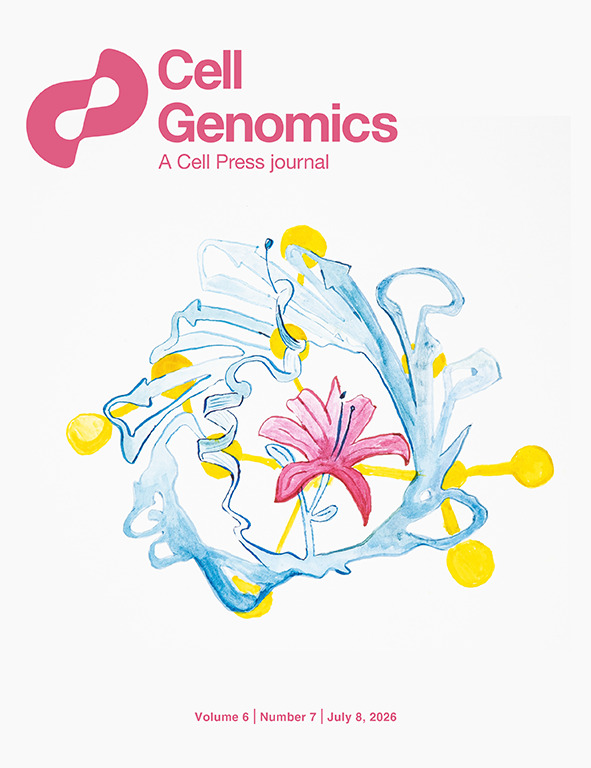

26-Jul
Paper on Cell Genomics cover
Our paper titled "NERINE reveals rare variant associations in gene networks across phenotypes and implicates an SNCA-PRL-LRRK2 subnetwork in Parkinson’s disease" was featured on the cover of Cell Genomics journal's volume 6, issue 7. Link